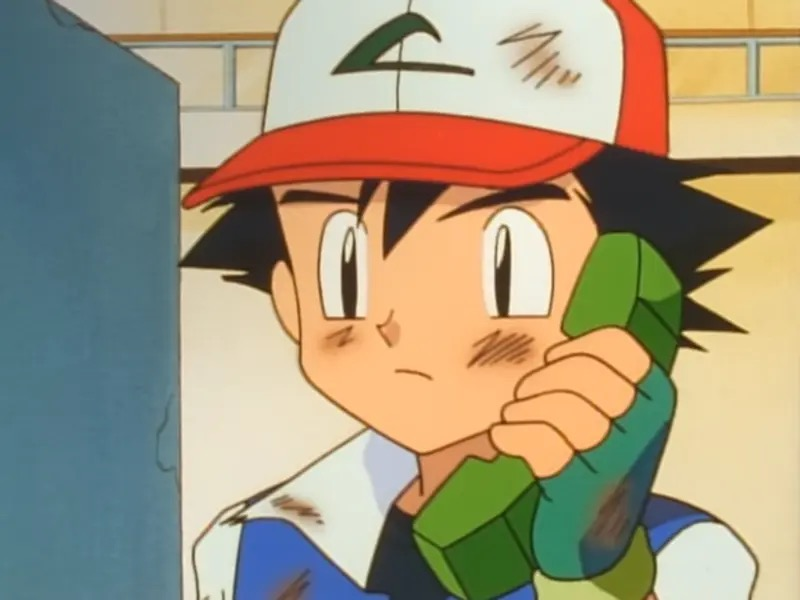

Sentence Mining
This is how I make my flashcards. I watch Japanese shows and YouTube, and when I hear a sentence where I understand everything except one word, I turn that sentence into an Anki card, with the clip's audio and a screenshot. I've made about 4,000 cards this way since April 2024.
What it is
Sentence mining means collecting real sentences from things you watch, read or listen to, and learning new words through them. The sentence is the "ore", the new word is what you dig out of it.
A normal vocabulary card shows a word and its meaning. A mined card shows the word inside the sentence where you actually met it, said by a real person, in a scene you remember.
朝晩
morning and evening
歯は朝晩みがくのよ！
Ash's mum on the phone: "Brush your teeth morning and night!", with her voice and the scene.
The second one sticks much better: you remember who said it, how it sounded, and how the word is used (no particle after it, right before the verb).
Only one new word
The rule I follow is i+1: the sentence has exactly one thing I don't know yet, and I understand everything else. "i" is what I already know, "+1" is the one new word.
- The card explains itself. Since I know the rest of the sentence, the new word's meaning is almost obvious from context.
- Reviews stay quick. On the front I only have to recall one word, not puzzle out a whole sentence.
- It's always the right level. The sentences grow with me: as I know more, I can mine from harder shows.
If a sentence has two or more words I don't know, I skip it. There are always more sentences. Skipping is part of the method, not a failure.
What I use
| Tool | What it does | Cost |
|---|---|---|
| Anki | The flashcard app. It schedules each card so you see it just before you'd forget it. | Free on Mac, Windows and Android. The iPhone app costs money once. |
| Migaku | A browser extension. It adds Japanese subtitles you can hover over for a dictionary, and makes the card for you: sentence, word, meaning, translation, screenshot and audio. | Paid subscription |
| Migaku Anki add-on | Connects Migaku to Anki, so cards go straight into my deck with the right fields. | Free |
Where I mine from: YouTube, Netflix, and shows or movies saved on my computer, which Migaku can also play in the browser with their subtitle file.
Anki add-ons I use (install in Anki with Tools, Add-ons, Get Add-ons, then paste the code):
| Add-on | Why | Code |
|---|---|---|
| Japanese Pitch Accent | Adds the pitch accent diagram to each card. | 148002038 |
| Edit Field During Review | Fix a typo or a bad translation right on the card while reviewing. | 1020366288 |
| Review Heatmap | A calendar of the days I did my reviews. Good for keeping the streak. | 1771074083 |
| AnkiConnect | Lets other programs add cards to Anki. Optional. | 2055492159 |
How I make a card
- Watch with Japanese subtitles. Migaku shows them under the video. I just watch normally and enjoy it.
- Pause on an i+1 sentence. When I hear a line where only one word is new, I stop the video.
- Look up the word. I hover over it in the subtitles and Migaku shows the dictionary entry.
- Make the card. One click and Migaku fills in the card: the sentence with the word marked, the meaning, a translation, a screenshot of that moment, the audio of the line, and the audio of the word alone.
- Check it before sending. Is it really one sentence? Does the translation match what's happening in the scene? Is the screenshot clear? I fix anything that's off.
- Send it to Anki. It lands in my "Sentence Mining" deck, ready for tomorrow's reviews.
I don't mine every unknown word I hear. Only the ones that seem useful, in a line that makes sense on its own. A few good cards a day beat a pile of bad ones.
My card
This is a real card from my deck. The front shows only the sentence. I read it, try to remember the marked word (meaning and reading), then flip.
Front
歯は朝晩みがくのよ！
朝晩
Back
歯は朝晩みがくのよ！
朝晩
朝晩 (あさばん)
∙ morning and evening
歯は朝晩みがくのよ！
Brush your teeth morning and night!

Pokémon The Series: Indigo League E2
Every card has the same fields. Most are filled in by Migaku, one by an add-on:
| Field | What's in it | Filled by |
|---|---|---|
| Expression | The new word | Migaku |
| Sentence | The line from the video, new word marked | Migaku |
| Sentence Translation | The English meaning of the line | Migaku |
| Definitions | The word's reading and dictionary meaning | Migaku |
| Sentence Audio | The clip of the line from the video | Migaku |
| Word Audio | The word on its own | Migaku |
| Images | A screenshot from that moment | Migaku |
| Sentence Furigana | The line with readings over the kanji | Migaku |
| Source | The show and episode, or the YouTube link | Me |
| PitchADD | The pitch accent diagram | Japanese Pitch Accent add-on |
| Notes | Anything extra I want to remember | Me, when needed |
The card's look is my own custom style on top of Migaku's note type. It also cleans up leftover symbols Migaku sometimes puts in the sentence.
Reviewing
I do my Anki reviews every day. The mining deck takes me about 25 minutes a day.
- Front: read the sentence. Do I know the marked word, both the meaning and how to say it?
- Back: check, and play the audio. Hearing the line again is half the point.
| Button | When I press it |
|---|---|
| Good (space) | I knew the meaning and the reading. |
| Hard (2) | Meaning right, reading slightly off. |
| Again (1) | I didn't know it. |
| Easy | Never. It pushes cards too far away. |
Settings: Anki's FSRS scheduler, with "desired retention" at 85%. That means Anki aims for me to remember about 85 of every 100 cards. Higher sounds better but costs a lot more review time.
My rules
- One new word per sentence. If there are two, skip the line.
- One sentence per card. Short clips are faster to review and easier to remember.
- Mine from things you enjoy. The scene is what makes the word stick, so it has to be something you care about.
- Useful words first. Everyday words beat rare ones, even if the rare one sounds cool.
- Always note the source. So you can go back to the scene, and remember where the card came from.
- Check the translation. Automatic translations can be wrong. Fix it if it doesn't match the scene.
- No big text in the screenshot. Pick a frame of the scene, not a title card or a caption covering the picture.